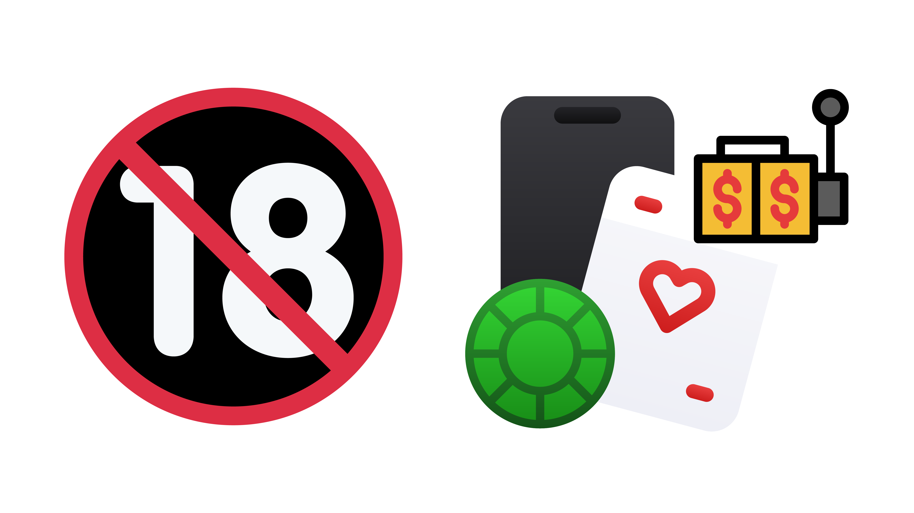
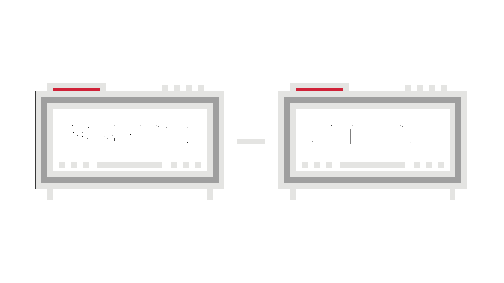
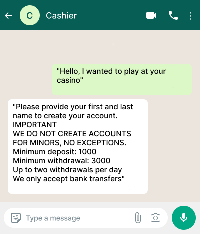
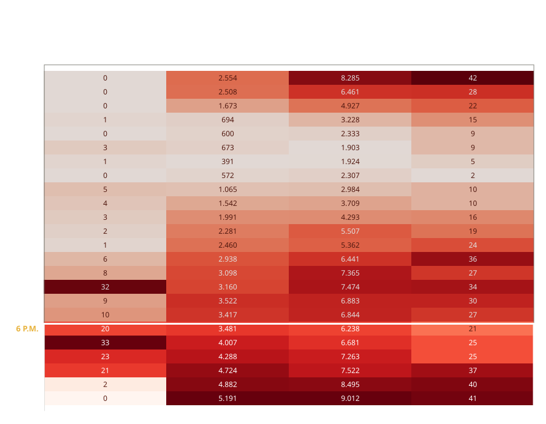
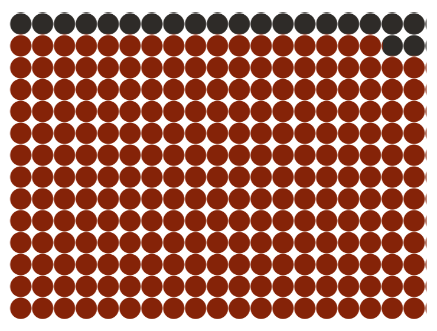
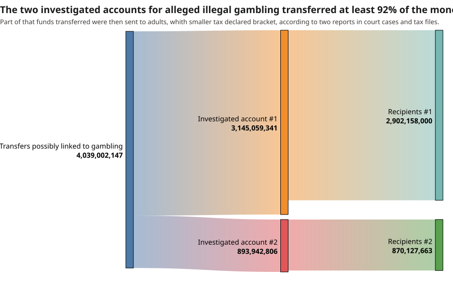

Ten ongoing court cases examine children's participation and adults who received sums that don't match their declared income, according to tax information.
An official report filed in a court case identified transfers from 266 accounts registered to minors to a company under investigation for suspected illegal gambling.

Minors are not only players. Two payment receipts now under review by the courts ended up in accounts registered to children.
Transfers cluster between 10 p.m. and 1 a.m., according to two reports filed in continuing court cases.

The investigated chain has three steps: advertising, cashiers — who collect payments and hand out credits to players — and the gambling sites themselves.
The trail of transfers under judicial investigation leads to accounts under minor's name. Along the way it passes through adults who took in as much as 21 times the income ceiling of their declared tax bracket. And the scheme of cashiers and online casinos keeps its ultimate beneficiaries out of sight.
“Hello, I wanted to play at your casino,” begins a WhatsApp exchange contained in a court file. The reply came with specific instructions:
“Please provide your first and last name to create your account.
IMPORTANT
WE DO NOT CREATE ACCOUNTS FOR MINORS, NO EXCEPTIONS.
Minimum deposit: 1000
Minimum withdrawal: 3000
Up to two withdrawals per day
We only accept bank transfers.”
The player received a “game link,” instructions on where to send the money and an account created by the person he had contacted. In return he sent a receipt for a 1,000-peso transfer. At no point did the exchange include documents establishing his identity or his age.

The chat is one piece of a group of 10 court cases in Argentina involving suspected illegal gambling. Exchanges like it appear in four of the files, with different participants each time. The information contained in each payment receipt — bank aliases, tax identification numbers — made it possible to determine who was listed as responsible for the accounts receiving the money. Two of them turned out to be registered to people under 18. The same analysis surfaced some two dozen illegal betting sites that appear nowhere in the cases reviewed.
Illegal gambling in Argentina has made room for minors. Not only as players, but as cashiers: the middlemen who sell credits for online casinos and collect the payments. Money transfers documented in continuing court cases show adolescents doing exactly that. Two accounts under investigation for allegedly collecting proceeds from clandestine betting took in at least 4.039 billion pesos, about $2.5 million, over three months. Follow that money and it ends with adults whose declared tax status cannot account for the sums they received.
The consequences reach into classrooms. The Red Cross surveyed 11,421 young people between 13 and 16 at 231 schools. Its first finding was that most of them are “exposed” to online gambling. Among those who bet, 79 percent acknowledged a “risk of addiction,” one in eight had fallen into debt, 69 percent reported anxiety and distress, and 49 percent said their habits and their schoolwork had suffered.
Legal gambling in Argentina is regulated and taxed. At the national level every deposit carries a 5 percent levy, and more in some cases. The law bars anyone under 18 from betting. Advertising rules in the city of Buenos Aires require that ads carry the warning: “COMPULSIVE GAMBLING IS HARMFUL TO YOUR HEALTH.” The rules are not always followed.
Some of the trade operates in plain sight, in front of thousands of people. Two giant screens in Buenos Aires advertised the site 1xslot at busy intersections. “150% bonus up to 300,000 ARS,” the ad promised, alongside a QR code. The same ad ran on a screen inside a city bus. In every case, smaller type noted that gambling is prohibited for minors and cited “license ogl/2024/586/0786.”
Buenos Aires officials said the city had issued no such license. It had been granted by the Curaçao Gaming Authority to Orakum N.V., a company based there. And the site that holds it is not 1xslot, the one advertised on the street, but 1xslots. That site says an international license “does not automatically imply local authorization throughout the country.”
An official report from October 2025 looked more closely at 1xslot, the site on the billboards: “When creating a user by email, it does not request age or legal documents. Only a valid email address is required.” A separate government agency concluded that “it is possible to place bets on the platform” from Buenos Aires. It found slot machine games and a menu of payment options that included conventional bank transfers and cryptocurrency.
Two links in the chain come before a player ever reaches an online casino: the advertising that makes the sites known, and the cashiers who handle the money. The cashiers are part of the money trail. They extend credit to players in exchange for collecting their wagers. The funds do not sit still. The receiving accounts, in turn, record further transfers to third parties in amounts close to what they had just taken in, the documents obtained show.
The court files obtained by this news organization map a skeleton of 39 illegal betting sites and 91 cashiers. Five of the cashiers turned up linked to two or more sites. How to tell an illegal site from a legal one? They do not appear on the list of authorized sites kept by the Association of Argentine State Lotteries, and they do not end in .bet, the domain used by licensed online casinos. Even so, the distinction is not always easy to draw. “Between 51 percent and 66 percent of adolescents cannot tell legal betting platforms from illegal ones,” the Red Cross study found.
Identified in court files from ongoing investigations in Argentina. Online gambling sites are in red; cashiers, in green.
The court files map a skeleton of 39 alleged illegal betting sites.
Around them, 91 cashiers: the middlemen who sell credits for the casinos and collect the payments.
Two cashiers appear with accounts under minors' name.
According to the documents in the hands of the courts, the sequence begins with advertising: street signs, influencer posts, social media messages pointing to betting sites and explaining how to place a wager. “Message us on WhatsApp,” reads one post by casinoargentina.24hs on Instagram. Then the cashiers take over.
The skeleton of casinos and cashiers does not end with the files reviewed here. Illegal casinos also promote themselves on channels like Telegram. An analysis of two years of promotional messages on the public channel ArgentinaCasinos.com lengthens the list by 24 more sites.
Among those 24, five had sign-up processes that did not require documents verifying age. On one, the box where a user declares being of legal age came pre-checked. “Users can register in minutes without uploading documents or providing bank details,” reads the site of Bombastic.
Every message reviewed carries a link to a betting site, along with instructions for getting started and promises of gifts or bonuses.
“Attention, Argentina! Sign up at Melbet and use the promo code ARGENTINACASINOS when you create your account. With this code, your welcome bonus goes up to a total of 1,000,000 extra as a gift,” read a message posted on July 2.
A year and a half earlier, another one promised: “We're handing it to you — with this casino you take home up to 1 BTC as a gift plus 100 free spins on your first deposit. Huge deal! It also offers daily cashback bonuses: the more you play, the more you get back. What are you waiting for?”
Based on court cases about illegal gambling, the reports of transfers received by two investigated accounts include the hour of each movement, as do the messages scraped from Telegram. Each column is shaded against its own minimum and maximum, so colors are comparable within a column but not between columns.

There is a pattern around time. The messages peak between 3 and 4 p.m., and again between 7 and 8 p.m. The transfers analyzed in documents submitted to the courts follow a similar rhythm. One official report identified 266 minors who sent money to an account suspected of collecting illegal gambling proceeds. The busiest hours fall between 10 p.m. and 1 a.m., but at 3 p.m. the number of transfers also jumps. It falls off from 4 p.m. until 7 p.m., when the decline stops, and the volume climbs again after 8 p.m.
A similar pattern repeats when transfers are analyzed with no age filter at all. Starting at 7 p.m., the hourly count rises steadily, reaching a maximum between 11 p.m. and midnight.
Government agencies track movements through banks and digital wallets tied to accounts suspected of collecting illegal gambling money. This investigation obtained reports on two of them. Why those two in particular? Because they appear in the payment instructions of two casinos. Together, according to both reports, they absorbed 4.039 billion pesos in just under 90 days.
That sum comprises 193,420 transfers. Among them, 266 minors appear as the primary holders of the accounts that set the movements in motion, one report found. A 16-year-old boy sent one million pesos — more than the average income of the country's working population, according to official statistics for the first quarter of the year.
An official report, included in a court case about illegal gambling, detected transfers between 266 accounts registered to minors and another one.

245 accounts
Received nothing back
9 accounts
Received less than they sent
7 accounts
Received more than they sent
5 accounts
Received the same amount
The case reviewed shows 523 transfers from 266 accounts whose primary holders are minors. They did not go through banks, but through digital wallets. The destination: one of the accounts suspected of collecting illegal wagers. The average transfer came to 10,684 pesos. Together they added up to 5.5 million.
Twenty-one of the accounts in these minors' names received money back from the account under suspicion: 698,700 pesos, or 12 percent of what the 266 accounts had sent. In seven cases the payment back exceeded the original transfer, in five it matched, and in nine it fell short.

The two accounts kept only a small share of the money. Each passed at least 92 percent of it on to third parties. Who are they? Their principal recipients are registered with Argentine tax authorities under a bracket whose annual income ceiling is as much as 21 times below the sums they took in.
For the account that collected the most, the principal recipient is a 23-year-old man, according to banking records. He received 230.7 million pesos between November and February. With the tax agency he is registered as a Category A monotributista, a bracket for small earners that caps annual income at 10.2 million pesos.
A similar pattern shows up at the other account under suspicion for collecting illegal gambling proceeds. Over eight days last June and July, its principal recipient took in 194.1 million pesos. That person, tax records show, is also a Category A monotributista.
One of the other main recipients presents a different problem. His CUIT — the identification number Argentines use with the tax agency — “has pending verification requirements,” according to the official database.
Judicial sources acknowledged the difficulty of “attacking the problem.” Courts have managed more than once to block illegal sites. Investigators call the tool useful, but say it does not stop new unlicensed pages from appearing.
Players in Argentina's financial system say digital wallet providers have tightened their controls, and still face limits in detecting wrongdoing. “Illegal betting businesses tend to disguise the line of work they are in,” they said.
Those difficulties explain why the machinery of illegal gambling remains visible and within reach, while the people who ultimately profit from it keep both their anonymity and their impunity.
This story is based on ten court cases involving suspected illegal gambling in the City of Buenos Aires, all opened in 2024 and still active. We obtained the files through judicial sources.
We began by identifying the allegations in each case. Because some of the documents are poor-quality scans, we extracted by hand the cashiers named in the complaints, the websites they were linked to and the WhatsApp conversations associated with each one. That produced a first database, which we used to build the network of sites and cashiers under investigation. We checked the resulting list against the registry of licensed sites published by the Association of State Lotteries of Argentina, known as Alea, and confirmed with the group’s representatives in July 2026 that the registry was current.
We then searched for public Telegram channels devoted to gambling in Argentina. Using the Telethon library, we collected 185 messages posted to a group called ArgentinaCasinos.com between September 2024 and July 2026, and used regular expressions to pull out the links to the gambling sites promoted in each message.
We visited those addresses with Playwright, a browser automation tool, to document how the sites register users and what identification they ask for. We stopped at the step before confirming an account and never completed a registration, to avoid opening user accounts on sites under judicial investigation. Because each site offers a different path through the process, we adapted the procedure case by case.
Finally, we used natural-pdf to extract the money transfer reports contained in the case files and organize them into tables. We standardized the columns for debit, amount, credit, and date and time so the records could be compared, which allowed us to identify sums, timestamps and possible recipients. We then cross-referenced those records with the tax filings for the recipients published by ARCA, the agency that replaced AFIP.
Limitations. All ten cases are pending, and no one has been convicted: the events and connections described here are allegations under judicial investigation. Because the files came from sources, they do not represent every illegal gambling case in the city. The Telegram findings come from a single public group and do not describe the market as a whole. The quality of some scans made automated extraction impossible, and information on those pages may have gone unrecovered. And because we did not complete any registrations, our account of those processes ends at the step before an account is confirmed.